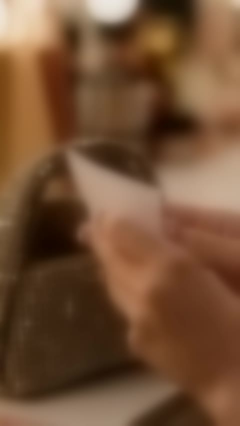
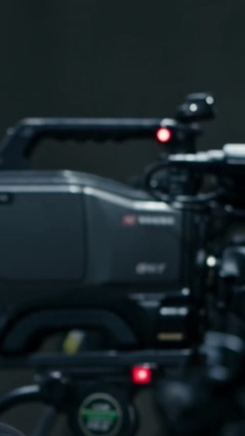

UZI COSMETICสตอรี่บอร์ด v2 · หน้า 1/4
“ลิปของแม่”วันแถลงข่าว × UZI Matte Liquid Lipstick · แนวตั้ง 9:16 · ~45 วินาที
วันที่เธอต้องแถลงข่าวออกทีวีครั้งแรก เธอกลัวจนร้องไห้ จนกระทั่งเจอ การ์ดจากแม่ ในกระเป๋า
ข้อความในการ์ดพาเธอนึกถึงสิ่งที่แม่เคยทำให้ก่อนขึ้นเวทีตอนเด็ก นั่นคือ “ทาลิปแล้วยิ้มนะลูก… ไม่มีใครเห็นหรอกว่าหนูกลัว”
เส้นเรื่องใหม่: ทุกฉากมีเหตุผลส่งต่อกัน
1
เธอต้องแถลงข่าวครั้งแรกในชีวิต ถ่ายทอดสดทั่วประเทศ
เพราะออกทีวีสด
2
ที่บ้านต่างจังหวัด แม่เปิดทีวีรอดู มือกำลิปแท่งเล็กไว้แน่น
เพราะรู้ว่าแม่ดูอยู่
3
เธอ กลัวทำให้แม่ผิดหวัง เขียนสคริปต์กี่รอบก็ไม่ดีพอ จนน้ำตาไหล
เพราะต้องไปซ่อมหน้าที่เปื้อนน้ำตา
4
เธอเปิดกระเป๋าแล้ว เจอการ์ดลายมือแม่ ที่แอบใส่ไว้ข้างลิป
เพราะข้อความในการ์ดเป็นประโยคเดิมของแม่
5
เธอ นึกถึงวันเด็ก วันที่แม่ทาลิปให้ก่อนขึ้นเวทีโรงเรียน แล้วเด็กหญิงก็ยิ้มออก
เพราะนี่คือวิธีที่แม่สอนให้กล้า
6
เธอ ทาลิปท่าเดียวกับที่แม่เคยทาให้ แล้วยิ้มได้ จากนั้นวางสคริปต์ทิ้งไว้
เพราะไม่ต้องพูดให้สมบูรณ์แบบ แค่ยิ้มให้แม่เห็นก็พอ
7
บนเวที เธอมองกล้องแล้วพูดว่า “แม่… หนูยิ้มแล้วนะ”
เพราะไฟ LIVE ส่งภาพไปถึงบ้าน
8
ที่บ้าน แม่ก็ทาลิปสีเดียวกันไว้ นั่งยิ้มทั้งน้ำตาอยู่หน้าจอ
ปูไว้ → เฉลย: จุดที่ทำให้คนดู “อ๋อ!”
| ปูไว้ตอนต้น | | เฉลยตอนหลัง |
|---|
| แม่กำลิปไว้ในมือหน้าทีวี (ช็อต 3) คนดูจะสงสัยว่าถือไว้ทำไม | → | แม่ทาลิปสีเดียวกับลูก ยิ้มไปพร้อมกันหน้าจอ (ช็อต 19) อ๋อ! |
| กระดาษขาวในกระเป๋า (ภาพเดิมวินาทีที่ 20 ซึ่งตอนนี้ไม่มีความหมาย) | → | การ์ดลายมือแม่ ใช้เป็นตัวเปลี่ยนเรื่อง (ช็อต 8–9) |
| เด็กหญิงยิ้มออกหลังแม่ทาลิปให้ (ช็อต 10) | → | ผู้ใหญ่ยิ้มแบบเดียวกันในกระจก (ช็อต 13) |
| สคริปต์ที่ขีดฆ่าจนยับ (ช็อต 5) | → | วางทิ้งไว้ แล้วพูดจากใจแค่ประโยคเดียว (ช็อต 14, 16) |
| ไฟแดง LIVE บนกล้อง (ช็อต 2) ตอนแรกเป็นแรงกดดัน | → | กลายเป็นทางที่เธอส่งยิ้มถึงแม่ (ช็อต 16–18) |
ทำไมถึงซึ้ง: ลิปในเรื่องนี้ไม่ได้มีไว้แค่ให้สวย แต่เป็น ความกล้าที่แม่ส่งต่อมา แม่สอนให้ทาลิปแล้วยิ้ม แม้ในวันที่กลัวที่สุด
และตอนจบคนดูจะรู้ว่า วันนี้ แม่ก็กลัวแทนลูกเหมือนกัน แม่จึงทาลิปแล้วยิ้มไปพร้อมลูก แม้จะอยู่ห่างกัน 500 กิโล
UZI COSMETICสตอรี่บอร์ด v2 · หน้า 2/4
องก์ 1
วันที่ทั้งประเทศดูอยู่… รวมทั้งแม่
ปูเหตุผลว่าทำไมเธอกลัวขนาดนี้
โทนสี: เย็น เทาฟ้า (ฝั่งลูก) · อุ่นซีด (ฝั่งบ้านแม่)อารมณ์: กลัว กดดัน
ภาพเดิม
แถลงข่าว
ครั้งแรกในชีวิต
“อีกสามนาที…”
010:00–0:02HOOK
อีกสามนาที เธอต้องออกไปแถลงข่าวครั้งแรกในชีวิต เธอแอบมองผ่านช่องม่าน มือเย็นเฉียบ
🔊 ชัตเตอร์รัว + เสียงหัวใจเต้น
ภาพเดิม
● LIVE
ถ่ายทอดสดทั่วประเทศ
020:02–0:04
ไมค์ทุกช่องตั้งรอ ไฟแดงบนกล้องติดแล้ว ภาพของเธอกำลังจะถูกส่งออกไปทั่วประเทศ
ปูไว้: ไฟแดง LIVE (เฉลยช็อต 18)
🔊 เสียงจี่ไมค์เบาๆ
ช็อตใหม่
📺
บ้านต่างจังหวัด · ห้องนั่งเล่น
ทีวีเครื่องเก่าเปิดภาพห้องแถลงข่าว
แม่วัยห้าสิบกว่านั่งชิดจอ
↓
ซูมเข้ามือแม่
กำลิป UZI แท่งเล็กไว้แน่น
บ้านเกิด · 500 กม. จากกรุงเทพฯ
030:04–0:07ปูไว้ ★
ไกลออกไป 500 กิโล แม่เปิดทีวีรอตั้งแต่เช้า นั่งชิดจอ มือกำอะไรบางอย่างไว้แน่น… ลิปแท่งเล็กๆ
ให้คนดูสงสัยว่า “แม่ถือลิปไว้ทำไม” แล้วเฉลยในช็อต 19
🎬 ถ่ายช็อตนี้กับช็อต 19 ในฉากเดียวกัน จะประหยัดกว่า
ภาพเดิม
040:07–0:08.5
ในห้องแถลงข่าว นักข่าวหันมามองทางม่าน สายตาพร้อมจับผิดทุกคำ
🔊 เสียงจอแจเงียบลงทันที
ภาพเดิม
“เขียนกี่รอบ… ก็ยังไม่ดีพอ”
050:08.5–0:10.5
เธอเขียนสคริปต์ ขีดฆ่า แล้วเขียนใหม่ อยากให้ทุกคำออกมาสมบูรณ์แบบ เพราะวันนี้… แม่ดูอยู่
🔊 เสียงขยำกระดาษ
ภาพเดิม
“ถ้าหนูพูดผิด… แม่จะอายไหม”
060:10.5–0:12.5
ความกลัวว่าจะทำให้แม่ผิดหวัง ทำให้น้ำตาไหลออกมาเอง
จุดเชื่อม: เธอร้องไห้เพราะห่วงแม่ ไม่ใช่แค่ตื่นเต้น
🔊 เสียงหัวใจหยุด แล้วเงียบสนิท
UZI COSMETICสตอรี่บอร์ด v2 · หน้า 3/4
องก์ 2
การ์ดในกระเป๋า
จุดเปลี่ยน: ความกล้าที่แม่ฝากไว้
โทนสี: ค่อยๆ อุ่นขึ้น · ฉากความทรงจำเป็นโทนฟิล์มเก่าอารมณ์: ตื้นตัน ฮึบ
ภาพเดิม
070:12.5–0:14
เธอรีบกลับมาที่หน้ากระจกเพื่อซ่อมหน้าที่เปื้อนน้ำตา แล้วเปิดกระเป๋าหาเครื่องสำอาง
🔊 ดนตรีเงียบ เหลือแค่เสียงลมหายใจ
ภาพเดิม
080:14–0:15.5
ในกระเป๋า นิ้วเธอไปเจอการ์ดใบเล็กที่พับไว้ข้างลิป ซึ่งเธอไม่รู้มาก่อนเลยว่ามีใครแอบใส่ไว้
🎬 ภาพเดิมวินาทีที่ 20 ย้ายมาไว้ตรงนี้ กระดาษขาวที่ไม่มีความหมายจึงกลายเป็นตัวเปลี่ยนเรื่อง
ภาพเดิม + ซ้อนลายมือ
ทาลิปแล้วยิ้มนะลูก
ไม่มีใครเห็นหรอก
ว่าหนูกลัว
วันนี้แม่ดูอยู่หน้าจอนะ
— แม่ ♥
(เสียงแม่อ่านการ์ด)
090:15.5–0:18จุดเปลี่ยน
ลายมือแม่… ประโยคเดียวกับที่แม่พูดกับเธอมาตั้งแต่เด็ก
เสียงแม่ (VO):
“ทาลิปแล้วยิ้มนะลูก… ไม่มีใครเห็นหรอกว่าหนูกลัว”
🎬 เขียนการ์ดจริงด้วยลายมือ หรือซ้อนตัวหนังสือตอนตัดต่อ
ช็อตใหม่
💄
ความทรงจำ · โทนฟิล์มเก่า
หลังเวทีงานโรงเรียน
เด็กหญิงในชุดรำตัวสั่น
↓
แม่ (ตอนสาว) คุกเข่าลง
ทาลิปให้ลูกเบาๆ
↓
เด็กหญิงยิ้มออก
20 ปีก่อน
100:18–0:21อ๋อ ①
ภาพเมื่อ 20 ปีก่อนย้อนกลับมา วันที่เธอกลัวการขึ้นเวทีครั้งแรก แม่คุกเข่าลงทาลิปให้แล้วยิ้ม… และเด็กหญิงตัวเล็กก็ยิ้มตาม
ถึงตรงนี้คนดูจะเข้าใจทันทีว่าทำไมลิปถึงทำให้เธอกล้า
🎬 ช็อตสุดท้ายจบที่ริมฝีปากเด็กกลางเฟรม แล้วตัดเข้าช็อต 11
ภาพเดิม
UZI Matte Liquid Lipstick
110:21–0:24
ตัดกลับมาปัจจุบันด้วยภาพปากที่ซ้อนกันพอดี เธอทาลิปท่าเดียวกับที่แม่เคยทาให้
🎬 Match cut: ตัดจากปากเด็กเป็นปากผู้ใหญ่ ให้อยู่ตำแหน่งเดียวกันในเฟรม · 🔊 เสียงปาดลิป ASMR
ภาพเดิม
120:24–0:25
เม้มปากหนึ่งที… หายใจลึกๆ
🔊 เสียงเม้มปาก “ป๊อบ” แล้วเปียโนเริ่มเข้ามา
ภาพเดิม
130:25–0:27
แล้วยิ้ม… ยิ้มแบบเดียวกับเด็กหญิงคนนั้นเมื่อ 20 ปีก่อน
เชื่อมกับช็อต 10: ยิ้มเดียวกัน คนละวัย
ช็อตใหม่
📄
เจนเพิ่มได้
สคริปต์ที่ขีดฆ่าวางทิ้งบนโต๊ะ
↓
มือเธอสอดการ์ดของแม่
เข้ากระเป๋าคู่กับลิป
แล้วเดินออกไป
140:27–0:28.5
เธอวางสคริปต์ทิ้งไว้บนโต๊ะ แล้วเก็บการ์ดของแม่ไว้กับตัวแทน
จุดเชื่อม: ไม่ต้องพูดให้สมบูรณ์แบบแล้ว แค่ยิ้มให้แม่เห็นก็พอ
UZI COSMETICสตอรี่บอร์ด v2 · หน้า 4/4
องก์ 3
ยิ้มให้แม่เห็น
เฉลยทุกอย่างที่ปูไว้
โทนสี: ทองอุ่นเต็มที่อารมณ์: มั่นใจ ซึ้ง
ภาพเดิม
150:28.5–0:31
ม่านเปิด เธอเดินออกไปท่ามกลางแสงแฟลช ครั้งนี้ในมือไม่มีสคริปต์
🔊 ดนตรีบิลด์ขึ้น + ชัตเตอร์รัว
ภาพเดิม
“ก่อนเริ่ม… ขอพูดกับคนคนหนึ่งก่อนนะคะ”
“แม่… หนูยิ้มแล้วนะ”
160:31–0:35PAYOFF
แทนที่จะอ่านสคริปต์ เธอมองตรงไปที่กล้องถ่ายทอดสด แล้วพูดกับคนแค่คนเดียว
บทพูด (เสียงจริง):
“ก่อนเริ่ม… ขอพูดกับคนคนหนึ่งก่อนนะคะ”
“แม่… หนูยิ้มแล้วนะ”
🎬 ใช้เครื่องมือลิปซิงก์ให้ปากตรงกับบท · ครอปตัวหนังสือมั่วด้านบนออก
ควรเจนใหม่
170:35–0:36
นักข่าวที่เคยจ้องจับผิด วางปากกาลง ทั้งห้องเงียบกริบ
🎬 เจนใหม่ให้เป็นนักข่าวชุดเดียวกับช็อต 04
ภาพเดิม (ครอป)
● LIVE
180:36–0:37
ไฟแดงบนกล้องยังติดอยู่… ส่งรอยยิ้มนั้นออกไปไกล 500 กิโล
เฉลย: ไฟ LIVE ที่เคยน่ากลัว กลายเป็นสะพานถึงแม่
ช็อตใหม่
🥹
ฉากเดียวกับช็อต 3
บนจอทีวี ลูกสาวกำลังยิ้ม
แม่น้ำตาไหลแต่ยิ้ม
ปากแม่ทาลิปสีเดียวกับลูก
↓
แม่ยื่นมือแตะจอเบาๆ
ข้างตัวมีลิป UZI แท่งเดียวกัน
“ยิ้มสวยแล้วลูก”
190:37–0:41อ๋อ ② ★
ที่บ้าน แม่ก็ทาลิปสีเดียวกันไว้แล้ว… เพราะวันนี้แม่ก็กลัวแทนลูกเหมือนกัน แม่จึงทาลิปแล้วยิ้มไปพร้อมลูก
เฉลยช็อต 3: ลิปที่แม่กำไว้คือลิปที่แม่ทาเพื่อยิ้มไปพร้อมลูก
ภาพเดิม + การ์ด
ทาลิปแล้วยิ้ม…
ไม่มีใครเห็นหรอกว่าเรากลัว
UZI
MATTE LIQUID LIPSTICK
ส่งความมั่นใจ ให้คนที่คุณรัก
[โปรเซ็ตคู่ แท่งของคุณ + แท่งของแม่]
กดตะกร้าเลย 🛒
200:41–0:46END CARD
ปิดด้วยลิปท่ามกลางแสงไฟ และประโยคของแม่ที่ทุกคนเอาไปใช้กับชีวิตตัวเองได้
เสียงแบรนด์ปิดท้าย:
“ทาลิปแล้วยิ้ม… ไม่มีใครเห็นหรอกว่าเรากลัว”
🎬 ถ้าถ่ายใหม่ ให้วางลิป 2 แท่งคู่กัน (แท่งของแม่กับแท่งของลูก) · ช่องในวงเล็บให้ทีมเติม